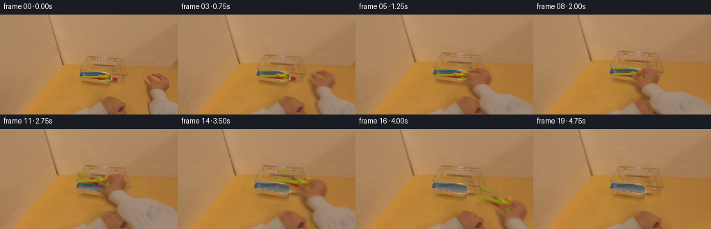
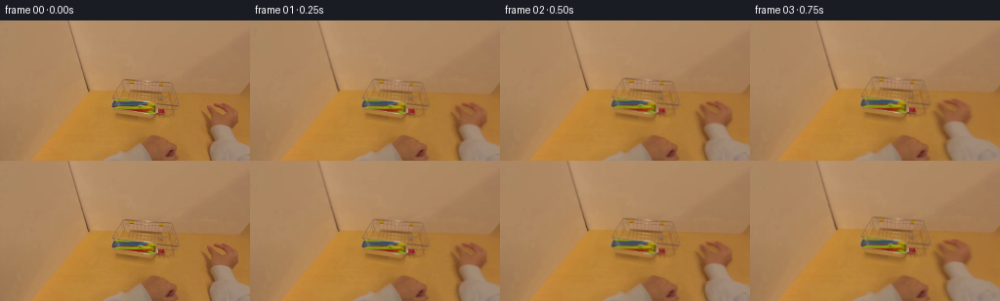

CODING AGENTS AS PIXEL WORLD MODELS
traex/GPT-6-Astra · common50_0016
点击播放 · 原生 RGB 像素
逐轮保存的候选
回放视频、检查图与代码变化。
每份候选均可单独播放。实际图片检查记录在下方工具轨迹中。
候选 01播放与检查图
点击播放 · 原生 RGB 像素


展开代码变化
--- 上一保存版本
+++ 本次保存版本
@@ -0,0 +1,247 @@
+from pathlib import Path
+import numpy as np
+from PIL import Image, ImageDraw
+import cv2
+from scipy.ndimage import gaussian_filter, binary_fill_holes, binary_dilation, label
+from scipy.interpolate import LinearNDInterpolator
+import artifact_io
+
+ROOT = Path(__file__).resolve().parent
+H, W = 144, 256
+im = np.array(Image.open(ROOT/'first_frame.png').convert('RGB'))
+f = im.astype(np.float32)
+yy, xx = np.mgrid[:H,:W].astype(np.float32)
+r,g,b = f.transpose(2,0,1)
+rng = np.random.default_rng(9817)
+
+def smooth(t):
+ t = np.clip(t,0,1)
+ return t*t*(3-2*t)
+
+def poly_mask(pts, shape=(H,W), aa=4):
+ p = Image.new('L',(shape[1]*aa,shape[0]*aa))
+ ImageDraw.Draw(p).polygon([(int(x*aa),int(y*aa)) for x,y in pts],fill=255)
+ return np.array(p.resize((shape[1],shape[0]),Image.Resampling.LANCZOS)).astype(np.float32)/255
+
+def over(base, fg, a):
+ return base*(1-a[...,None])+fg*a[...,None]
+
+# The visible right hand, its digits, and its cuff are isolated by their
+# chroma separation from the strongly ochre tabletop. No learned segmentation.
+roi = (xx>=204)&(yy>=83)
+seed = roi & ((g-b)<52)
+labels, n = label(seed)
+counts = np.bincount(labels.ravel()); counts[0]=0
+seed = labels==np.argmax(counts)
+seed = binary_fill_holes(seed)
+edge = binary_dilation(seed,iterations=1)
+# Keep the individual finger gaps open; recover their antialiased edges.
+alpha = np.clip((57-(g-b))/11,0,1)*edge
+alpha = np.maximum(alpha,seed.astype(np.float32)*.94)
+alpha = gaussian_filter(alpha,.34)
+alpha *= roi
+
+# Fit just the exposed wooden table. Its subtle, nonuniform lighting is used
+# in the small disocclusion left behind by the moving arm.
+xn=(xx-220)/50; yn=(yy-112)/40
+terms=np.stack([np.ones_like(xx),xn,yn,xn*yn,xn*xn,yn*yn,xn*yn*yn,yn*xn*xn],-1)
+valid=(xx>178)&(yy>80)&((g-b)>54)&((r-g)>46)&((r-g)<61)
+coef=np.linalg.lstsq(terms[valid], f[valid],rcond=None)[0]
+wood=terms@coef
+# Reuse real grain residuals from a bare part of this same tabletop.
+sx=184+(np.arange(W)%19)
+texture=f[:,sx]-gaussian_filter(f[:,sx],(1.1,1.1,0))
+wood+=texture*.7
+wood=np.clip(wood,0,255)
+erase=gaussian_filter(binary_dilation(seed,iterations=3).astype(np.float32),.8)
+erase=np.clip(erase*1.04,0,1)
+background=over(f,wood,erase)
+
+# Extend only the photographed sleeve, beyond the original image boundary.
+# This hidden extension is exposed when the arm reaches toward the tray.
+EH,EW=234,326
+Y,X=np.mgrid[:EH,:EW].astype(np.float32)
+# Reflected coordinates avoid obvious repeating seams in the cloth texture.
+def triangle_wave(z, period):
+ v=np.mod(z,2*period)
+ return np.where(v<=period,v,2*period-v)
+sxt=224+triangle_wave(X-224,28)
+syt=128+triangle_wave(Y-128,14)
+cloth=cv2.remap(f,sxt.astype(np.float32),syt.astype(np.float32),cv2.INTER_LINEAR,borderMode=cv2.BORDER_REFLECT_101)
+# Retain folds and texture, but suppress the occasional boundary pixel.
+clothmean=np.array([155.,132.,113.],np.float32)
+cloth=clothmean+(cloth-clothmean)*.72
+ext=np.zeros((EH,EW,3),np.float32)+cloth
+ext[:H,:W]=f
+extmask=poly_mask([(215,143),(211,132),(214,122),(220,114),(239,114),(246,124),(256,128),(274,144),(288,174),(318,234),(245,234),(223,181)],(EH,EW))
+leftedge=215+np.maximum(Y-144,0)*.32
+border_shade=np.exp(-((X-leftedge-1.2)/3.1)**2)*17
+ext-=border_shade[...,None]*np.array([1,.9,.72])
+# Extend the last real rows without creating a visible horizontal seam.
+for y in range(144,153):
+ w=smooth((y-143)/10)
+ for x in range(216,256):
+ ext[y,x]=f[143,x]*(1-w)+ext[y,x]*w
+extalpha=np.zeros((EH,EW),np.float32)
+extalpha[128:]=extmask[128:]
+extalpha[:H,:W]=alpha
+# Right of the image, the same sleeve continues out of shot.
+extalpha[:128,W:]=0
+# Remove ochre boundary contamination in translucent photographed pixels.
+fg=f.copy()
+a=alpha[...,None]
+fg=np.where(a>.08,(f-(1-a)*wood)/np.maximum(a,.08),f)
+fg=np.clip(fg,0,255)
+ext[:H,:W]=fg
+extpremul=ext*extalpha[...,None]
+
+# Plastic colours are separated from the silver-blue metal and its warm rim.
+tray_roi=(xx>=115)&(xx<=160)&(yy>=80)&(yy<=95)
+plastic=tray_roi & (((g>r-12)&(g-b>56)) | ((b<43)&(g>65)) | ((r-g>63)&(b<57)))
+# A red handle projects just beyond the tray on the right.
+plastic |= (xx>=161)&(xx<=168)&(yy>=90)&(yy<=95)&(r-g>64)&(b<59)
+# Soft subpixel object silhouettes derived from the actual colours.
+objalpha=gaussian_filter(plastic.astype(np.float32),.48)
+objalpha=np.clip(objalpha*1.23,0,1)
+
+# The tray surface is revealed only when the utensils leave it. Shading follows
+# the tray's existing perspective and cool reflected band, not a flat patch.
+u=np.clip((xx-117)/42,0,1)
+v=np.clip((yy-81.8-.065*(xx-117))/(7.2+.10*(xx-117)),0,1)
+metal=np.stack([66+49*v+10*u,83+31*v+5*u,97+6*v-3*u],-1)
+metal+=np.exp(-((v-.79)/.06)**2)[...,None]*np.array([12,11,9])
+metal-=np.exp(-((v-.31)/.11)**2)[...,None]*np.array([8,5,1])
+metal+=texture*.5
+inside=poly_mask([(117,82),(151,83.8),(158.8,86.4),(158,94.5),(151.5,95),(116.1,89)])
+# The rim above the interior is polished but reflects the same warm room.
+warmrim=np.stack([155+8*u,143+4*u,120+5*u],-1)
+under=over(warmrim,metal,inside)
+# A utensil outside the right-hand rim uncovers wood, not additional tray.
+out=(xx>=161)
+under[out]=wood[out]
+cleantray=over(background,under,objalpha)
+# Recover edge colours so the unshifted object reconstructs frame zero.
+objrgb=np.where(objalpha[...,None]>.02,
+ (f-cleantray*(1-objalpha[...,None]))/np.maximum(objalpha[...,None],.02),f)
+objrgb=np.clip(objrgb,0,255)
+objpremul=objrgb*objalpha[...,None]
+
+# Arm mesh: upper vertices move rigidly with the hand, lower sleeve vertices
+# blend into the offscreen forearm. The original finger anatomy is retained.
+gx,gy=np.meshgrid(np.arange(190,327,4),np.arange(72,235,4))
+points=np.c_[gx.ravel(),gy.ravel()].astype(np.float32)
+source_c=np.array([228.,109.],np.float32)
+query=np.c_[xx.ravel(),yy.ravel()]
+
+def hand_transform(p, centre, degrees, grip, scale):
+ q=p.copy()
+ # Two small joint bends close the existing pinch rather than painting a hand.
+ thumb=np.exp(-((q[:,0]-214)/5.8)**2-((q[:,1]-93)/8)**2)
+ fingers=np.exp(-((q[:,0]-222)/8.8)**2-((q[:,1]-87)/7.4)**2)
+ q[:,0]+=grip*(3.4*thumb-1.6*fingers)
+ q[:,1]+=grip*(.9*thumb+3.8*fingers)
+ rad=np.deg2rad(degrees)
+ R=np.array([[np.cos(rad),-np.sin(rad)],[np.sin(rad),np.cos(rad)]])
+ rigid=(q-source_c)@R.T*scale+centre
+ wt=1-smooth((p[:,1]-111)/112)
+ return p+(rigid-p)*wt[:,None]
+
+def warp_hand(centre,degrees,grip,scale):
+ dest=hand_transform(points,np.array(centre),degrees,grip,scale)
+ inverse=LinearNDInterpolator(dest,points,fill_value=-100)
+ uv=inverse(query).reshape(H,W,2).astype(np.float32)
+ premul=cv2.remap(extpremul,uv[:,:,0],uv[:,:,1],cv2.INTER_LINEAR,borderMode=cv2.BORDER_CONSTANT)
+ am=cv2.remap(extalpha,uv[:,:,0],uv[:,:,1],cv2.INTER_LINEAR,borderMode=cv2.BORDER_CONSTANT)
+ return premul,am
+
+# Carefully timed reach, contact, closing pinch, lift, and withdrawal.
+keys=np.array([
+# frame, wrist x,y, wrist angle, grip closure, hand scale
+[0,228,109,0,0,1],
+[1,226,108.6,-.5,0,1],
+[2,220,107.6,-2,0,1],
+[3,208,106,-6,0,1],
+[4,192,104.6,-12,0,1],
+[5,178,103.7,-18,0,1],
+[6,168.5,103.5,-23,.05,1],
+[7,165,104,-25,.2,1],
+[8,165,104,-25,.7,1],
+[9,165,104,-25,1,1],
+[10,164.5,100,-26,1,1.014],
+[11,165.5,94,-27,1,1.034],
+[12,172,90.5,-26,1,1.05],
+[13,181,93,-22,1,1.063],
+[14,193,101,-18,1,1.075],
+[15,207,113,-14,1,1.085],
+[16,220,129,-10,1,1.092],
+[17,232,147,-7,1,1.10],
+[18,246,166,-4,1,1.108],
+[19,260,188,-2,1,1.11],
+],np.float32)
+
+def pose(t):
+ return np.array([np.interp(t,keys[:,0],keys[:,j]) for j in range(1,6)])
+
+def object_warp(centre, degrees, scale, t):
+ anchor=np.array([151.,91.])
+ contact=np.array([165.,104.])
+ dr=np.deg2rad(degrees+25)
+ R=np.array([[np.cos(dr),-np.sin(dr)],[np.sin(dr),np.cos(dr)]])
+ target=np.array(centre)+(R@(anchor-contact))*scale
+ lift=smooth((t-9)/4)
+ # Lifting changes the foreshortening of this loosely gathered bundle.
+ A=R@np.diag([scale*(1+.035*lift),scale*(1+.48*lift)])
+ M=np.c_[A,target-A@anchor].astype(np.float32)
+ op=cv2.warpAffine(objpremul,M,(W,H),flags=cv2.INTER_LINEAR)
+ oa=cv2.warpAffine(objalpha,M,(W,H),flags=cv2.INTER_LINEAR)
+ return op,oa
+
+def render(t):
+ px,py,angle,grip,scale=pose(t)
+ handp,ha=warp_hand((px,py),angle,grip,scale)
+ if t<=9:
+ scene=background.copy()
+ oa=None
+ else:
+ scene=cleantray.copy()
+ op,oa=object_warp((px,py),angle,scale,t)
+ # The utensil shadow separates gently as the bundle rises.
+ lift=smooth((t-9)/4)
+ shadow=cv2.warpAffine(oa,np.array([[1,0,1+lift*3],[0,1,2+lift*4]],np.float32),(W,H))
+ shadow=gaussian_filter(shadow,.7+1.0*lift)
+ scene*=1-shadow[...,None]*(.20-.07*lift)
+ # A soft contact shadow on the wood/tray situates the real hand in depth.
+ shifted=cv2.warpAffine(ha,np.array([[1,0,-1.4],[0,1,2.2]],np.float32),(W,H))
+ hs=gaussian_filter(shifted,1.45)
+ scene*=1-hs[...,None]*.16
+ if oa is not None:
+ scene=scene*(1-oa[...,None])+op
+ scene=scene*(1-ha[...,None])+handp
+ # Egocentric leaning-in, with restrained head drift, all from the same RGB.
+ lean=smooth(t/8)
+ back=smooth((t-14)/6)
+ zoom=1+.135*lean-.022*back
+ theta=.18*np.sin(t*.25)*lean
+ camera=cv2.getRotationMatrix2D((141,88),theta,zoom)
+ camera[:,2]+=np.array([-.8*lean+.25*np.sin(t*.35),-4.2*lean+.7*back])
+ scene=cv2.warpAffine(scene,camera,(W,H),flags=cv2.INTER_LINEAR,borderMode=cv2.BORDER_REFLECT_101)
+ return np.clip(scene,0,255)
+
+frames=[im.copy()]
+for i in range(1,20):
+ # A modest physical exposure during the quick sections prevents staccato
+ # cutout motion, while contact and the final frame remain crisp.
+ if i in (3,4,5,14,15,16,17,18):
+ image=.22*render(i-.13)+.56*render(i)+.22*render(i+.13)
+ else:
+ image=render(i)
+ frames.append(np.clip(np.rint(image),0,255).astype(np.uint8))
+frames=np.stack(frames)
+assert frames.shape==(20,144,256,3)
+assert np.array_equal(frames[0],im)
+artifact_io.save(frames,ROOT)
+# Numeric inspection and reproducible intermediate assets remain local.
+np.savez_compressed(ROOT/'.tmp'/'layers.npz',hand_alpha=alpha,utensil_alpha=objalpha,clean_background=background,empty_tray=cleantray)
+print('Saved',frames.shape,frames.dtype)
+print('Hand alpha mass:',float(alpha.sum()),'Utensil alpha mass:',float(objalpha.sum()))
+print('Adjacent frame mean absolute RGB differences:',np.round(np.abs(np.diff(frames.astype(np.float32),axis=0)).mean((1,2,3)),3).tolist())
可观测工具轨迹
实际执行的命令与返回图片。
命令 1exit 0
/bin/bash -lc "ls -la && cat prompt.txt && printf '\\n---RULES---\\n' && cat GENERATION_RULES.md"
命令 2exit 0
/bin/bash -lc "cat task_spec.json && cat artifact_io.py && python - <<'PY'
from PIL import Image
import numpy as np
im=np.array(Image.open('first_frame.png'))
print('shape',im.shape)
print('minmax',im.min(axis=(0,1)),im.max(axis=(0,1)))
# low-resolution numeric colour cells, unvisualized.
small=np.array(Image.fromarray(im).resize((32,18)))
for y,row in enumerate(small):
print(y, ' '.join('%02x%02x%02x'%tuple(p[:3]) for p in row))
PY"命令 3exit 0
/bin/bash -lc "python - <<'PY'
import importlib.util
for x in ['numpy','PIL','scipy','cv2']:
print(x, bool(importlib.util.find_spec(x)))
from PIL import Image
import numpy as np
im=np.array(Image.open('first_frame.png')).astype(float)
# region colour averages each 3x3 cell
for name,box in [('center',(110,60,180,100)),('right',(208,80,256,144)),('bottom',(110,112,208,144))]:
x0,y0,x1,y1=box
print('\\n',name)
for y in range(y0,y1,3):
print(y, ' '.join(f'{int(c[0]):03},{int(c[1]):03},{int(c[2]):03}' for c in [im[y:y+3,x:x+3].mean((0,1)) for x in range(x0,x1,3)]))
PY"命令 4exit 0
/bin/bash -lc "python - <<'PY'
import numpy as np
from PIL import Image
from scipy.ndimage import label
im=np.array(Image.open('first_frame.png')).astype(float)
r,g,b=im.transpose(2,0,1)
# intervals in right-hand region with lower warm-chroma than table
m=(g-b<51)&(r<165)
def ranges(v):
idx=np.flatnonzero(v)
if not len(idx): return ''
spl=np.split(idx,np.where(np.diff(idx)>1)[0]+1)
return ', '.join(f'{a[0]+202}-{a[-1]+202}' for a in spl)
for y in range(78,144):
print(y,ranges(m[y,202:]))
print('TRAY pixel rows rgb every second pixel:')
for y in range(79,97):
print(y,' '.join(f'{x}:{int(r[y,x])}/{int(g[y,x])}/{int(b[y,x])}' for x in range(112,171,2)))
PY"命令 5exit 0
/bin/bash -lc "python - <<'PY'
import numpy as np
from PIL import Image
im=np.array(Image.open('first_frame.png')).astype(float)
r,g,b=im.transpose(2,0,1)
print('Right hand numeric segmentation: all rows, x202..251, T=table S=skin F=fabric ?=edge')
for y in range(80,144):
s=''
for x in range(202,256):
if r[y,x]-g[y,x]>45 and g[y,x]-b[y,x]<47: c='S'
elif r[y,x]-g[y,x]<40 and g[y,x]-b[y,x]<45: c='F'
elif g[y,x]-b[y,x]>53: c='.'
else:c='?'
s+=c
print(y,s)
print('Tray ranges B=blue G=green Y=yellow R=red M=grey')
for y in range(76,100):
s=''
for x in range(110,174):
R,G,B=im[y,x]
if B>R-8 and B>G-7: c='B'
elif G>R-7 and B<G-50: c='G'
elif R>G+38 and B<G-25 and G<85: c='R'
elif B<33 and G>70:c='Y'
elif R-G<36 and G-B<48: c='M'
else:c='.'
s+=c
print(y,s)
PY"命令 6exit 0
/bin/bash -lc "cat > generate.py <<'PY'
from pathlib import Path
import numpy as np
from PIL import Image, ImageDraw
import cv2
from scipy.ndimage import gaussian_filter, binary_fill_holes, binary_dilation, label
from scipy.interpolate import LinearNDInterpolator
import artifact_io
ROOT = Path(__file__).resolve().parent
H, W = 144, 256
im = np.array(Image.open(ROOT/'first_frame.png').convert('RGB'))
f = im.astype(np.float32)
yy, xx = np.mgrid[:H,:W].astype(np.float32)
r,g,b = f.transpose(2,0,1)
rng = np.random.default_rng(9817)
def smooth(t):
t = np.clip(t,0,1)
return t*t*(3-2*t)
def poly_mask(pts, shape=(H,W), aa=4):
p = Image.new('L',(shape[1]*aa,shape[0]*aa))
ImageDraw.Draw(p).polygon([(int(x*aa),int(y*aa)) for x,y in pts],fill=255)
return np.array(p.resize((shape[1],shape[0]),Image.Resampling.LANCZOS)).astype(np.float32)/255
def over(base, fg, a):
return base*(1-a[...,None])+fg*a[...,None]
# The visible right hand, its digits, and its cuff are isolated by their
# chroma separation from the strongly ochre tabletop. No learned segmentation.
roi = (xx>=204)&(yy>=83)
seed = roi & ((g-b)<52)
labels, n = label(seed)
counts = np.bincount(labels.ravel()); counts[0]=0
seed = labels==np.argmax(counts)
seed = binary_fill_holes(seed)
edge = binary_dilation(seed,iterations=1)
# Keep the individual finger gaps open; recover their antialiased edges.
alpha = np.clip((57-(g-b))/11,0,1)*edge
alpha = np.maximum(alpha,seed.astype(np.float32)*.94)
alpha = gaussian_filter(alpha,.34)
alpha *= roi
# Fit just the exposed wooden table. Its subtle, nonuniform lighting is used
# in the small disocclusion left behind by the moving arm.
xn=(xx-220)/50; yn=(yy-112)/40
terms=np.stack([np.ones_like(xx),xn,yn,xn*yn,xn*xn,yn*yn,xn*yn*yn,yn*xn*xn],-1)
valid=(xx>178)&(yy>80)&((g-b)>54)&((r-g)>46)&((r-g)<61)
coef=np.linalg.lstsq(terms[valid], f[valid],rcond=None)[0]
wood=terms@coef
# Reuse real grain residuals from a bare part of this same tabletop.
sx=184+(np.arange(W)%19)
texture=f[:,sx]-gaussian_filter(f[:,sx],(1.1,1.1,0))
wood+=texture*.7
wood=np.clip(wood,0,255)
erase=gaussian_filter(binary_dilation(seed,iterations=3).astype(np.float32),.8)
erase=np.clip(erase*1.04,0,1)
background=over(f,wood,erase)
# Extend only the photographed sleeve, beyond the original image boundary.
# This hidden extension is exposed when the arm reaches toward the tray.
EH,EW=234,326
Y,X=np.mgrid[:EH,:EW].astype(np.float32)
# Reflected coordinates avoid obvious repeating seams in the cloth texture.
def triangle_wave(z, period):
v=np.mod(z,2*period)
return np.where(v<=period,v,2*period-v)
sxt=224+triangle_wave(X-224,28)
syt=128+triangle_wave(Y-128,14)
cloth=cv2.remap(f,sxt.astype(np.float32),syt.astype(np.float32),cv2.INTER_LINEAR,borderMode=cv2.BORDER_REFLECT_101)
# Retain folds and texture, but suppress the occasional boundary pixel.
clothmean=np.array([155.,132.,113.],np.float32)
cloth=clothmean+(cloth-clothmean)*.72
ext=np.zeros((EH,EW,3),np.float32)+cloth
ext[:H,:W]=f
extmask=poly_mask([(215,143),(211,132),(214,122),(220,114),(239,114),(246,124),(256,128),(274,144),(288,174),(318,234),(245,234),(223,181)],(EH,EW))
leftedge=215+np.maximum(Y-144,0)*.32
border_shade=np.exp(-((X-leftedge-1.2)/3.1)**2)*17
ext-=border_shade[...,None]*np.array([1,.9,.72])
# Extend the last real rows without creating a visible horizontal seam.
for y in range(144,153):
w=smooth((y-143)/10)
for x in range(216,256):
ext[y,x]=f[143,x]*(1-w)+ext[y,x]*w
extalpha=np.zeros((EH,EW),np.float32)
extalpha[128:]=extmask[128:]
extalpha[:H,:W]=alpha
# Right of the image, the same sleeve continues out of shot.
extalpha[:128,W:]=0
# Remove ochre boundary contamination in translucent photographed pixels.
fg=f.copy()
a=alpha[...,None]
fg=np.where(a>.08,(f-(1-a)*wood)/np.maximum(a,.08),f)
fg=np.clip(fg,0,255)
ext[:H,:W]=fg
extpremul=ext*extalpha[...,None]
# Plastic colours are separated from the silver-blue metal and its warm rim.
tray_roi=(xx>=115)&(xx<=160)&(yy>=80)&(yy<=95)
plastic=tray_roi & (((g>r-12)&(g-b>56)) | ((b<43)&(g>65)) | ((r-g>63)&(b<57)))
# A red handle projects just beyond the tray on the right.
plastic |= (xx>=161)&(xx<=168)&(yy>=90)&(yy<=95)&(r-g>64)&(b<59)
# Soft subpixel object silhouettes derived from the actual colours.
objalpha=gaussian_filter(plastic.astype(np.float32),.48)
objalpha=np.clip(objalpha*1.23,0,1)
# The tray surface is revealed only when the utensils leave it. Shading follows
# the tray's existing perspective and cool reflected band, not a flat patch.
u=np.clip((xx-117)/42,0,1)
v=np.clip((yy-81.8-.065*(xx-117))/(7.2+.10*(xx-117)),0,1)
metal=np.stack([66+49*v+10*u,83+31*v+5*u,97+6*v-3*u],-1)
metal+=np.exp(-((v-.79)/.06)**2)[...,None]*np.array([12,11,9])
metal-=np.exp(-((v-.31)/.11)**2)[...,None]*np.array([8,5,1])
metal+=texture*.5
inside=poly_mask([(117,82),(151,83.8),(158.8,86.4),(158,94.5),(151.5,95),(116.1,89)])
# The rim above the interior is polished but reflects the same warm room.
warmrim=np.stack([155+8*u,143+4*u,120+5*u],-1)
under=over(warmrim,metal,inside)
# A utensil outside the right-hand rim uncovers wood, not additional tray.
out=(xx>=161)
under[out]=wood[out]
cleantray=over(background,under,objalpha)
# Recover edge colours so the unshifted object reconstructs frame zero.
objrgb=np.where(objalpha[...,None]>.02,
(f-cleantray*(1-objalpha[...,None]))/np.maximum(objalpha[...,None],.02),f)
objrgb=np.clip(objrgb,0,255)
objpremul=objrgb*objalpha[...,None]
# Arm mesh: upper vertices move rigidly with the hand, lower sleeve vertices
# blend into the offscreen forearm. The original finger anatomy is retained.
gx,gy=np.meshgrid(np.arange(190,327,4),np.arange(72,235,4))
points=np.c_[gx.ravel(),gy.ravel()].astype(np.float32)
source_c=np.array([228.,109.],np.float32)
query=np.c_[xx.ravel(),yy.ravel()]
def hand_transform(p, centre, degrees, grip, scale):
q=p.copy()
# Two small joint bends close the existing pinch rather than painting a hand.
thumb=np.exp(-((q[:,0]-214)/5.8)**2-((q[:,1]-93)/8)**2)
fingers=np.exp(-((q[:,0]-222)/8.8)**2-((q[:,1]-87)/7.4)**2)
q[:,0]+=grip*(3.4*thumb-1.6*fingers)
q[:,1]+=grip*(.9*thumb+3.8*fingers)
rad=np.deg2rad(degrees)
R=np.array([[np.cos(rad),-np.sin(rad)],[np.sin(rad),np.cos(rad)]])
rigid=(q-source_c)@R.T*scale+centre
wt=1-smooth((p[:,1]-111)/112)
return p+(rigid-p)*wt[:,None]
def warp_hand(centre,degrees,grip,scale):
dest=hand_transform(points,np.array(centre),degrees,grip,scale)
inverse=LinearNDInterpolator(dest,points,fill_value=-100)
uv=inverse(query).reshape(H,W,2).astype(np.float32)
premul=cv2.remap(extpremul,uv[:,:,0],uv[:,:,1],cv2.INTER_LINEAR,borderMode=cv2.BORDER_CONSTANT)
am=cv2.remap(extalpha,uv[:,:,0],uv[:,:,1],cv2.INTER_LINEAR,borderMode=cv2.BORDER_CONSTANT)
return premul,am
# Carefully timed reach, contact, closing pinch, lift, and withdrawal.
keys=np.array([
# frame, wrist x,y, wrist angle, grip closure, hand scale
[0,228,109,0,0,1],
[1,226,108.6,-.5,0,1],
[2,220,107.6,-2,0,1],
[3,208,106,-6,0,1],
[4,192,104.6,-12,0,1],
[5,178,103.7,-18,0,1],
[6,168.5,103.5,-23,.05,1],
[7,165,104,-25,.2,1],
[8,165,104,-25,.7,1],
[9,165,104,-25,1,1],
[10,164.5,100,-26,1,1.014],
[11,165.5,94,-27,1,1.034],
[12,172,90.5,-26,1,1.05],
[13,181,93,-22,1,1.063],
[14,193,101,-18,1,1.075],
[15,207,113,-14,1,1.085],
[16,220,129,-10,1,1.092],
[17,232,147,-7,1,1.10],
[18,246,166,-4,1,1.108],
[19,260,188,-2,1,1.11],
],np.float32)
def pose(t):
return np.array([np.interp(t,keys[:,0],keys[:,j]) for j in range(1,6)])
def object_warp(centre, degrees, scale, t):
anchor=np.array([151.,91.])
contact=np.array([165.,104.])
dr=np.deg2rad(degrees+25)
R=np.array([[np.cos(dr),-np.sin(dr)],[np.sin(dr),np.cos(dr)]])
target=np.array(centre)+(R@(anchor-contact))*scale
lift=smooth((t-9)/4)
# Lifting changes the foreshortening of this loosely gathered bundle.
A=R@np.diag([scale*(1+.035*lift),scale*(1+.48*lift)])
M=np.c_[A,target-A@anchor].astype(np.float32)
op=cv2.warpAffine(objpremul,M,(W,H),flags=cv2.INTER_LINEAR)
oa=cv2.warpAffine(objalpha,M,(W,H),flags=cv2.INTER_LINEAR)
return op,oa
def render(t):
px,py,angle,grip,scale=pose(t)
handp,ha=warp_hand((px,py),angle,grip,scale)
if t<=9:
scene=background.copy()
oa=None
else:
scene=cleantray.copy()
op,oa=object_warp((px,py),angle,scale,t)
# The utensil shadow separates gently as the bundle rises.
lift=smooth((t-9)/4)
shadow=cv2.warpAffine(oa,np.array([[1,0,1+lift*3],[0,1,2+lift*4]],np.float32),(W,H))
shadow=gaussian_filter(shadow,.7+1.0*lift)
scene*=1-shadow[...,None]*(.20-.07*lift)
# A soft contact shadow on the wood/tray situates the real hand in depth.
shifted=cv2.warpAffine(ha,np.array([[1,0,-1.4],[0,1,2.2]],np.float32),(W,H))
hs=gaussian_filter(shifted,1.45)
scene*=1-hs[...,None]*.16
if oa is not None:
scene=scene*(1-oa[...,None])+op
scene=scene*(1-ha[...,None])+handp
# Egocentric leaning-in, with restrained head drift, all from the same RGB.
lean=smooth(t/8)
back=smooth((t-14)/6)
zoom=1+.135*lean-.022*back
theta=.18*np.sin(t*.25)*lean
camera=cv2.getRotationMatrix2D((141,88),theta,zoom)
camera[:,2]+=np.array([-.8*lean+.25*np.sin(t*.35),-4.2*lean+.7*back])
scene=cv2.warpAffine(scene,camera,(W,H),flags=cv2.INTER_LINEAR,borderMode=cv2.BORDER_REFLECT_101)
return np.clip(scene,0,255)
frames=[im.copy()]
for i in range(1,20):
# A modest physical exposure during the quick sections prevents staccato
# cutout motion, while contact and the final frame remain crisp.
if i in (3,4,5,14,15,16,17,18):
image=.22*render(i-.13)+.56*render(i)+.22*render(i+.13)
else:
image=render(i)
frames.append(np.clip(np.rint(image),0,255).astype(np.uint8))
frames=np.stack(frames)
assert frames.shape==(20,144,256,3)
assert np.array_equal(frames[0],im)
artifact_io.save(frames,ROOT)
# Numeric inspection and reproducible intermediate assets remain local.
np.savez_compressed(ROOT/'.tmp'/'layers.npz',hand_alpha=alpha,utensil_alpha=objalpha,clean_background=background,empty_tray=cleantray)
print('Saved',frames.shape,frames.dtype)
print('Hand alpha mass:',float(alpha.sum()),'Utensil alpha mass:',float(objalpha.sum()))
print('Adjacent frame mean absolute RGB differences:',np.round(np.abs(np.diff(frames.astype(np.float32),axis=0)).mean((1,2,3)),3).tolist())
PY
python generate.py"命令 7exit 0
/bin/bash -lc "python - <<'PY'
import numpy as np
from PIL import Image
from scipy.ndimage import label
L=np.load('.tmp/layers.npz')
for k in L.files:
a=L[k]
print(k,a.shape,a.min(),a.max())
a=L['hand_alpha']
for y in range(82,144,3):
idx=np.flatnonzero(a[y]>.4)
if len(idx):print(y,idx.min(),idx.max(),len(idx),np.round(a[y,idx].mean(),2))
im=np.array(Image.open('first_frame.png')).astype(float)
bg=L['clean_background']
mask=(a>.9)&(np.indices(a.shape)[0]>88)
print('Wood reconstructed',np.percentile(bg[mask],(0,10,50,90,100),axis=0))
for i in [0,5,8,9,10,12,15,19]:
f=np.array(Image.open(f'frames/{i:02}.png')).astype(float)
r,g,b=f.transpose(2,0,1)
skin=(r-g>44)&(g-b<45)&(r<172)&(r>80)&(np.indices(r.shape)[1]>110)&(np.indices(r.shape)[0]>40)
labels,n=label(skin)
cnt=np.bincount(labels.ravel());cnt[0]=0
if n:
pts=np.argwhere(labels==cnt.argmax())
print('skin bbox frame',i,pts.min(0),pts.max(0),'size',len(pts))
# check black or clipping
print('frame',i,'range',f.min(0).min(0),f.max(0).max(0))
PY"命令 8exit 0
/bin/bash -lc "python - <<'PY'
from pathlib import Path
import numpy as np
from PIL import Image
spec=(20,144,256,3)
frames=np.stack([np.array(Image.open(p)) for p in sorted(Path('frames').glob('*.png'))])
assert frames.shape==spec and frames.dtype==np.uint8
assert np.array_equal(frames[0],np.array(Image.open('first_frame.png')))
packed=np.load('pixels.npz')['pixels']
assert packed.shape==(144,256,20)
rgb=np.stack([(packed>>16)&255,(packed>>8)&255,packed&255],axis=-1).transpose(2,0,1,3)
assert np.array_equal(rgb,frames)
print('PASS: 20 RGB frames, 256x144, first frame pixel-identical, packed artifact matches PNG frames.')
for name in ['generate.py','pixels.npz','index.html']:
print(name,Path(name).stat().st_size,'bytes')
PY"保存候选 1 份；完成命令 8 次；可验证图片返回 0 张。原始 API 响应与完整日志保留在本地。